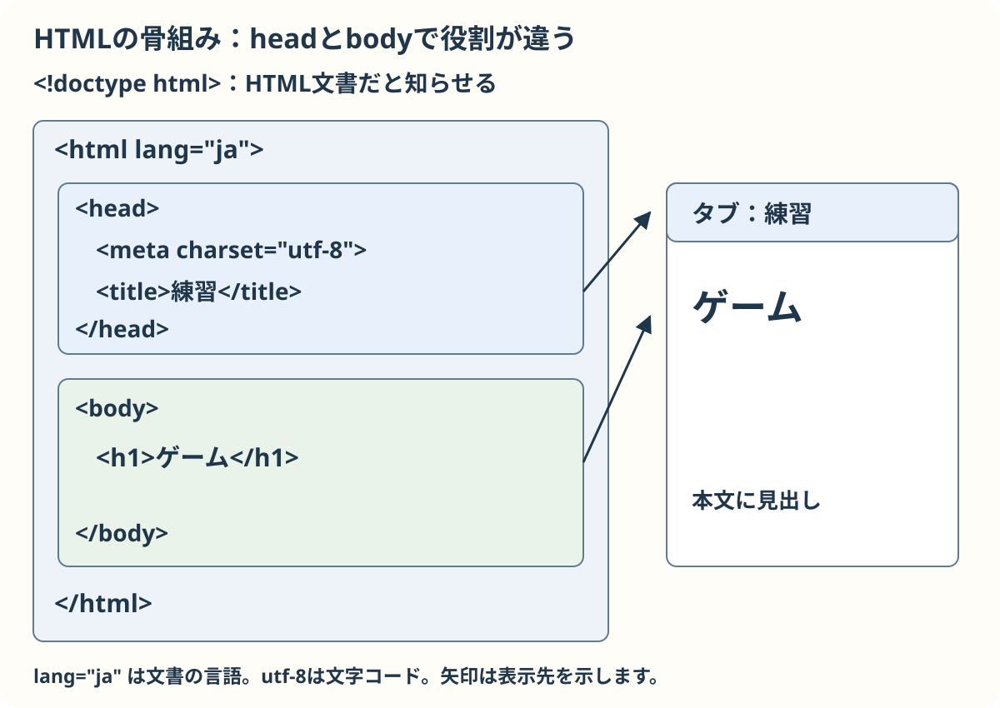
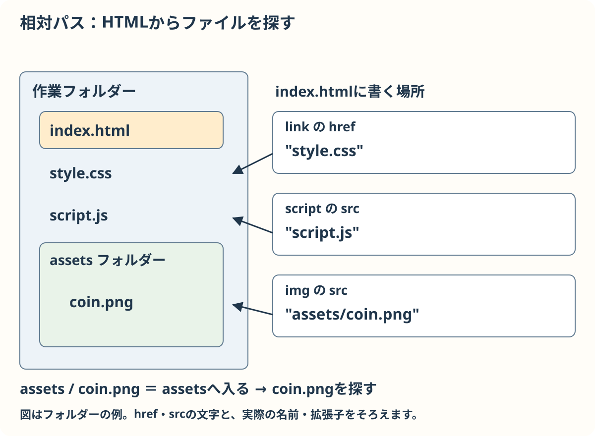

HTMLの基本文法
HTMLはページの部品とつながりを表します。最初から全部覚えなくて大丈夫です。必要な節を選んでください。
見本はこの教材から開けます。手元で試す準備は準備と操作を見てください。
タグだけの例は、特に指定がない限り「文書の骨組み」の例を保存した練習用 index.html の body の中で一つずつ試せます。次の例を試す前に前の例を消し、保存してブラウザーを再読み込みします。パスの例は下の説明に従ってください。
基本：文書の骨組み
一つのHTML文書では、head に文字コードやタブの題名などを書き、body に画面に表示する内容を書きます。最初の <!doctype html> はHTMLとして表示するための宣言です。
<!doctype html>
<html lang="ja">
<head><meta charset="utf-8"><title>練習</title></head>
<body><h1>ゲーム</h1></body>
</html>
これは単独で保存できる小さな例です。新しいフォルダーに index.html として保存して開くと、ページに「ゲーム」が表示され、タブには「練習」と出ます。
確認：h1はheadとbodyのどちら？
画面に表示する見出しなのでbodyです。
基本：よく使う要素
h1 はページの見出し、p は段落、a はリンクです。img は画像、button は押せるボタン、canvas はJavaScriptで絵を描く場所です。Canvasの幅と高さは、CSSの表示サイズとは別に描画の座標を決めます。
以下は実際に動く見本です。リンク先・画像・CSS・JavaScriptも一緒にあります。文法の練習見本を開くと、ボタンを押すたびに得点が増えます。見本ファイル全体は次のとおりです。
<!doctype html>
<html lang="ja">
<head>
<meta charset="utf-8">
<meta name="viewport" content="width=device-width, initial-scale=1">
<title>文法の練習</title>
<link rel="stylesheet" href="style.css">
<script src="script.js" defer></script>
</head>
<body>
<main>
<div class="panel">
<h1>ゲームの練習</h1>
<p>コインを集めよう <strong>楽しく</strong>！</p>
<img src="assets/coin.png" alt="コイン" width="64" height="64">
<p id="score" class="notice">0</p>
<button id="add" type="button">点を増やす</button>
</div>
<div class="row">
<div class="tile">赤</div>
<div class="tile">青</div>
<div class="tile">緑</div>
</div>
<div class="field"><span class="marker">星</span></div>
<div class="parent"><div class="child">幅半分</div></div>
<canvas id="game-canvas" width="200" height="80">Canvasを表示できません。</canvas>
<p><a href="../html.html">教材に戻る</a></p>
</main>
</body>
</html>見本を編集する場合は練習見本のZIPをダウンロードして展開し、できたフォルダーで作業します。画像や関連ファイルも入っています。
確認：絵を描く場所はどの要素？
canvasです。中身の文章はCanvasを表示できない場合の案内です。
リストと入力欄
項目を並べるには ul または ol の中に li を置きます。ul は番号のないリスト、ol は番号付きリストです。
次はHTML断片です。「文書の骨組み」の例を練習用の index.html に保存し、body の開始タグと終了タグの間にある見出しを消して、この断片を入れます。保存して開くと2つのリストが表示されます。
<ul>
<li>コインを集める</li>
<li>ゴールへ進む</li>
</ul>
<ol>
<li>準備する</li>
<li>ゲームを始める</li>
</ol>入力する欄には input、その説明には label を使えます。for の値と入力欄の id をそろえると、説明をクリックしても入力欄を選べます。input は終了タグのない空要素です。
次も独立したHTML断片です。前のリストを消し、同じ body の中に入れて保存・再読み込みし、「名前」をクリックして入力欄に文字を打ってみましょう。
<label for="player-name">名前</label>
<input id="player-name" type="text">確認：labelとinputを結び付けるには？
labelのforとinputのidに同じ名前を入れます。
基本：属性と目印
開始タグの中の追加情報を属性と呼びます。例えば id="score" は一つの要素を見つける目印、class="tile" は複数の要素に共通の目印です。同じページで同じidを使うのは一つにします。classは複数の要素に使えます。
<p id="score" class="notice">0</p>
<div class="tile">赤</div>
<div class="tile">青</div>文字列は引用符で囲みます。alt は画像を見られない人にも内容を伝える代わりの説明です。
確認：2つの箱に同じ見た目を付ける目印は？
同じclassを使えます。
基本：ファイルの場所
href はリンク先、src は画像やスクリプトの読み込み先です。今のHTMLファイルの場所から数える書き方を相対パスといいます。
<link rel="stylesheet" href="style.css">
<img src="assets/coin.png" alt="コイン">
<script src="script.js" defer></script>
このパスの断片は一つの場所にまとめて入れる例ではありません。link と script は head に、img は body に書きます。ファイルがそろった練習見本でも確認できます。
この例ではHTML、style.css、script.js は同じフォルダーです。画像はその中の assets フォルダーにあります。../ は一つ上のフォルダーです。defer を付けるとHTMLの読み込み後にスクリプトを実行します。
確認：同じフォルダーのstyle.cssを指す書き方は？
href="style.css" です。
補足：記号を文字として書く
HTMLでは < はタグの始まり、& は特別な文字の書き方の始まりです。文章として表示したいときは、それぞれ < と & と書きます。
<p>1 < 2 & 3</p>表示は「1 < 2 & 3」です。これはHTMLに書くときの約束で、JavaScriptの比較演算子の書き方とは別です。
確認：画面に < を表示するには？
HTMLでは < と書きます。